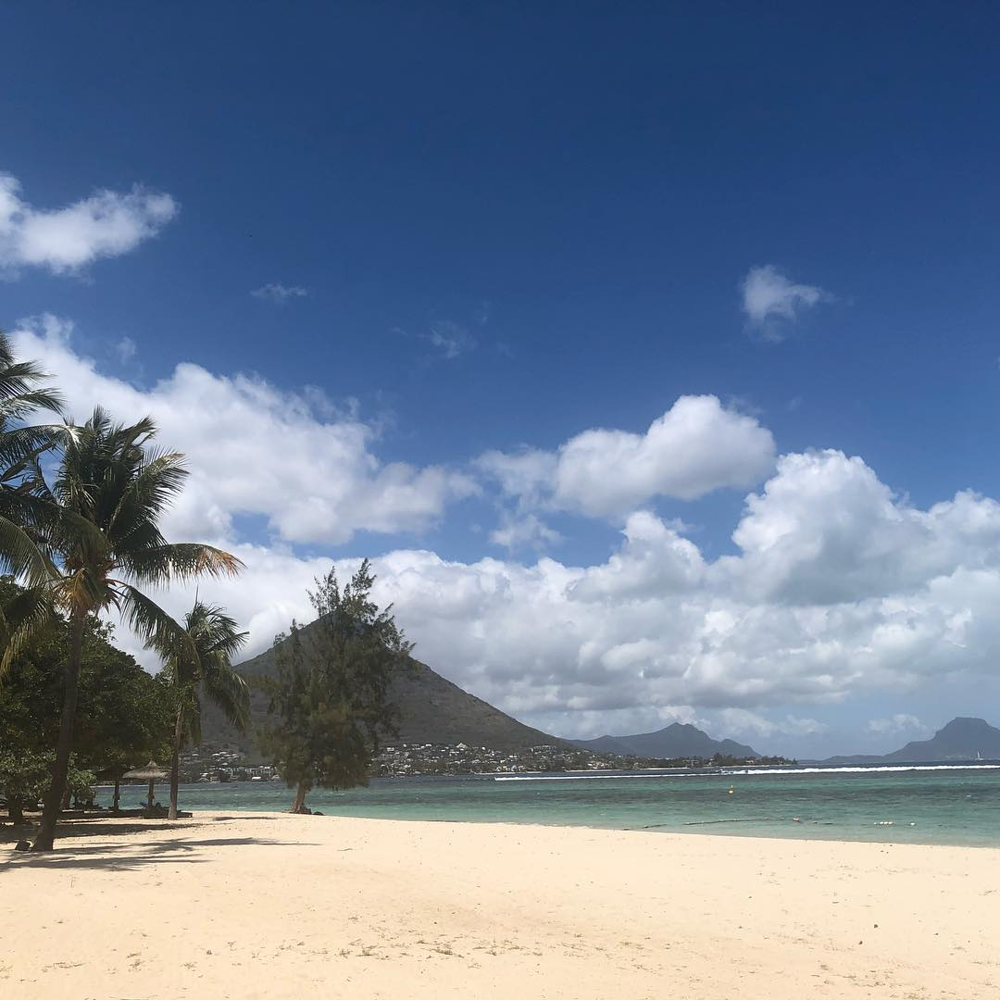

Mauritius
Honeymoon, Oct 1-15, 2018
Pool Junkies
Mark Twain summarized Mauritius the best. "Mauritius," he said, "was made first and then heaven; and heaven was copied after Mauritius.
Stepping off of the plane, you realize this island nation is tiny. Like 45 minutes to get across the whole thing, tiny. But as a result, people are much kinder
and have a strong sense of community. Despite having a ton of different ethnic backgrounds present, they are Mauritian first. It was once home of the Dodo, the bird that
proved humans can't have nice things. The intent of this leg of the trip was to compeletly unplug and refresh ourselves for the return home. We spend 8 hours a day at the pool,
staring into crystal clear water and drinking lots of rum. Food was great, things were cheap (in town), and the weather could not have been better.
We arranged for a tour one day, but given the size of the island, we were done in roughly 2 hours, getting us back to the pool for a few more hours of sun. There isn't a ton
to write about here, as we just chilled. But we did get excellent massages and generally were pampered to death. We also snorkeled and saw some cool coral and fish. I brought a GoPro
but the shots didn't come out great, but fun to have!
Shamwari Private Game Reserve, Port Elizabeth
Honeymoon, Oct 1-15, 2018

The Experience of a Lifetime
It's hard to explain what a safari experience is like because of how over the top it really is. We landed in Port Elizabeth so we could travel a few hours out to the safari grounds, which is not the prettiest city.
Known for their port (duh) it was a very industry heavy city that lives and dies by the port trade. However once you've driven 30ish minutes away, you're in the country. A lot of different grounds for safari were along the way, so we started getting a taste
of the animals we were going to start seeing, including giraffes! Our driver was super nice, telling us about his experiences and how much he loves Africa. Despite its economic and political struggles, the people were far and away some of the friendliest I have ever met.
Pulling up to the lodge, I realized how luxe of an experience we were about to receive. The building had just been renovated by its new owners, so we were among the first to experience it. We were greeted with cold towels and a fresh fruit drink while they got our room ready.
Sitting outside and listening to the birds, I realized we were very far from home. Granted, we had blazing fast wifi, you still felt isolated in the best way. They made us incredible gin tonics while we soaked in the sun and listened to seasoned safari-goeers argue over what bird was making that noise.
The colonial British types we were around were great people watching.
I could go on forever about the animals we saw and people we met, but what was most important was the first glimpse of the grounds as we came over the ridge on the first outing. It was legit Lion King stuff, just land as far as the eye could see, giraffes and elephants dotting the horizon.
The wild thing was that in 5 minutes, I would be close enough to these animals to touch them (though I wasn't allowed to). It was surreal. It also put the dire state of the environment into perspective, as some of these animals won't be around in the next 10 years.
The amenities were better than anything I've ever experienced and the villa we stayed in was so cool, though we were rarely in there as we were on safari or eating copious amounts of food. It was bittersweet having to leave, but Mauritius was calling our names.
Cape Town
Honeymoon, Oct 1-15, 2018

The Beginning of our Honeymoon
After spending nearly 20 hours in the air, we finally made it to Cape Town around 9pm dead tired. Thankfully, we had made arrangements to be picked up and brought to our AirBnb.
We arrived at one of the coolest houses I've ever seen, tucked into a quiet street in the Waterkant district of Cape Town. Surprisingly, Uber has a presence in Cape Town, as well as Uber Eats,
so we ordered a pizza (the only option that late) and got situated. After destroying our order, we passed out for the next days adventures.
The following day we were picked up by our guide, Bonnie, to get the traditional tourist experience of the Cape. This included the Cape of Good Hope, Boulder Beach to see penguins, and the botanic gardens, a surprise hit!
After running around all day, my wife and I dined at one of the coolest restaurants in the Cape, Le Colonial. After drinking our weight in wine and some of the best food I have ever eaten, we retired back to our house to
sleep it off and get ready for the next day, which was left unstructured so we could explore the city.
Our unstructured day was awesome, checking out little boutiques and an awesome brunch spot a block from our house, The Loading Bay. This was recommended by our server at dinner the night prior, so we were excited to see what it was about.
We were delighted to find iced matcha lattes (it was unseasonably warm in Africa) and some light food options. More exploring, including the famous waterfront and the aquarium, which led us to drinking. How do you not? We had another great dinner and
stopped at a 'secret' gin bar to close the night out.
On our final day, we took a tour of the winelands, both Franscoek and Stellenbosch, which were unreal. It was like being in Napa or Sonoma, but way cooler. Bonnie was our guide again and she brought us to her favorite vineyards, including one that uses
ducks to fight the pests instead of insecticides. It was an amazing day, concluded by an amazing meal, and then prep for the safari we would be going on the following day!
About Me

It's hard to summarize myself in a short blurb, but I am a tech lover, video game aficianado, and eater of all foods. Recently married, I've been with my wife for nearly 10 years, though just shy of 1 year married. I am a dog fan (boo cats!) and cannot wait to have one of my own.
Some Killer Pictures


Follow Me
While I tend to not be very active on social media, I'm still worth the follow. See what I'm up to by following @klapmo on basically all platforms. I'm pretty great at branding and have the same user across (nearly) every platform.